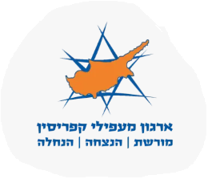
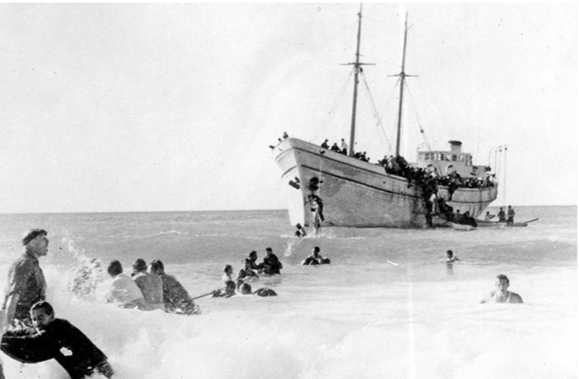

המשמרת עוברת אלינו: מנציחים את מורשת ההעפלה בשביל הים

המשמרת של הורינו הסתיימה. כעת, האחריות לשימור המורשת עוברת לידינו.
שותפים לדרך? הצטרפו להקמת התחנות
להנצחה ותרומה עכשיובכל שלט יסופר סיפורן המלא של הספינות שביקשו לגעת בחוף.